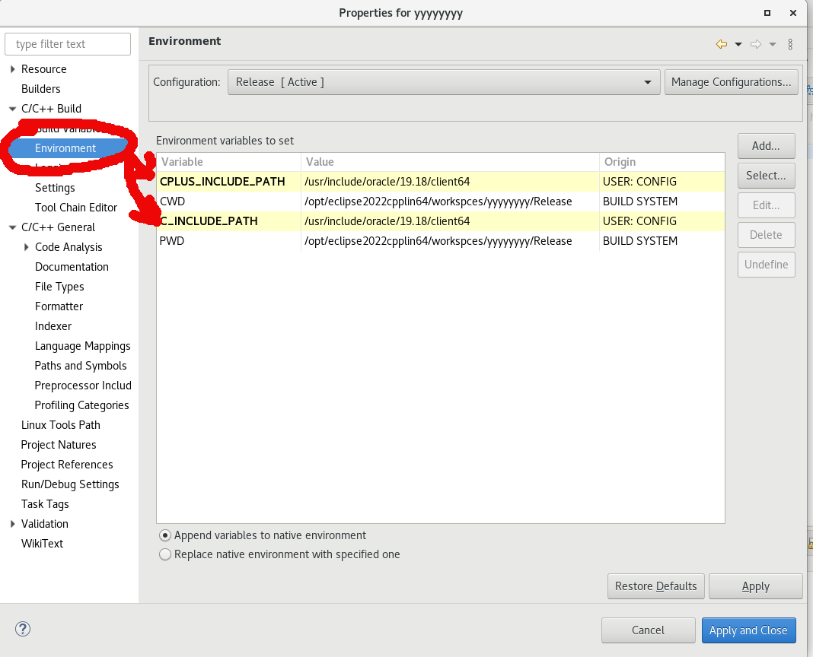
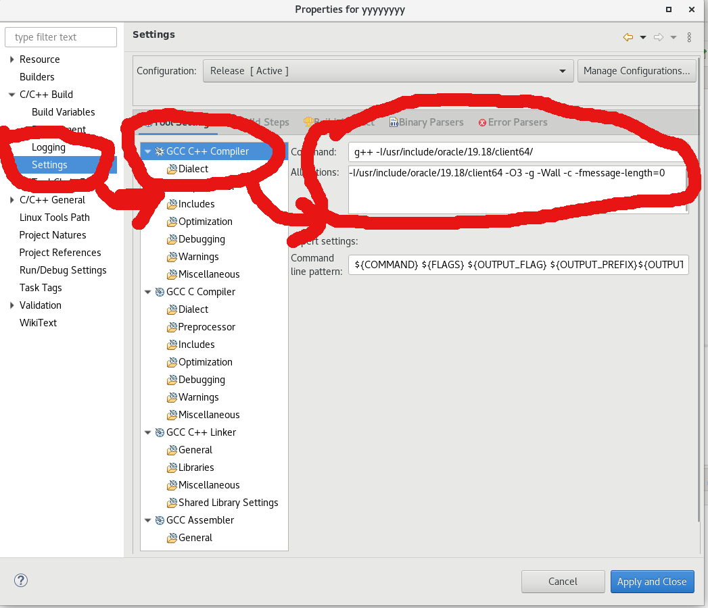
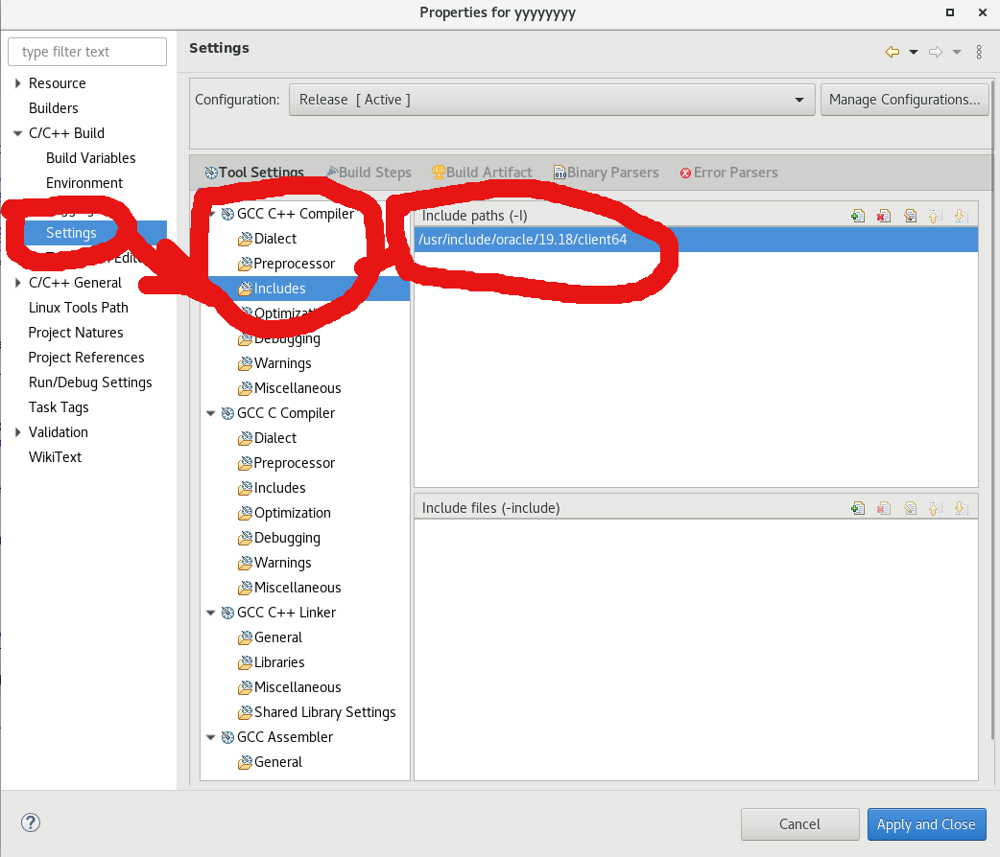
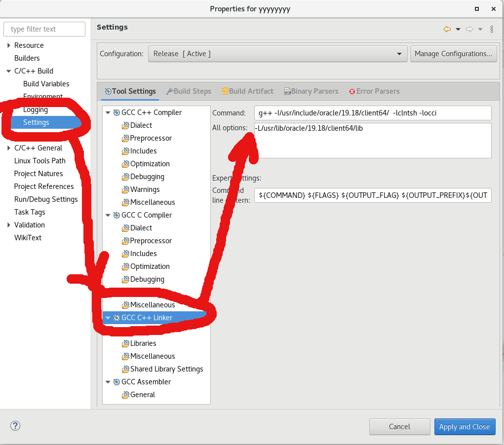
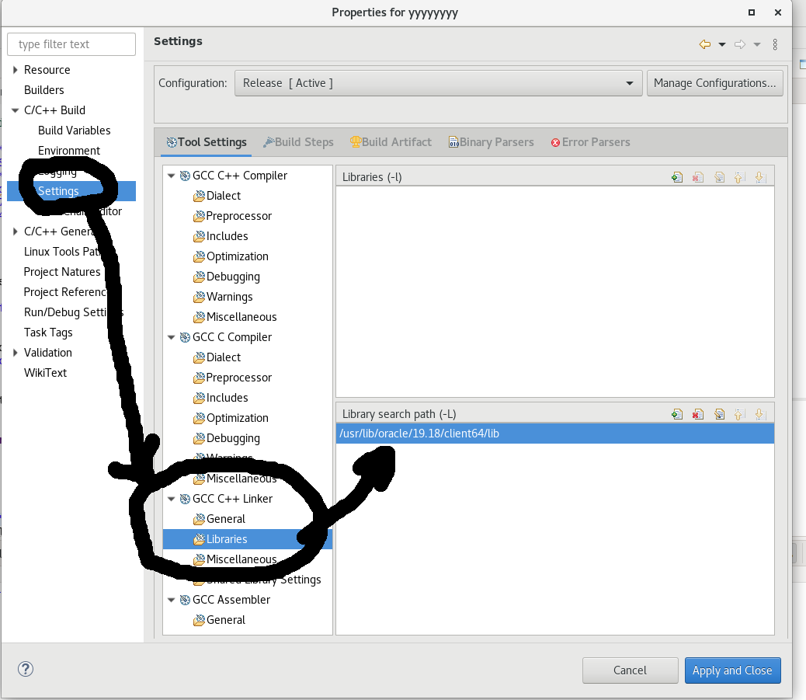

oracle bakka:
/***************************采用oracle本身提供
OCCI方式操作数据库*******************/
大量实验证明VC6 对应支持Oracle9i，
VC7对应支持Oracle10g，VC8支持Oracle11g。不过好像Oracle11G也能支持VC7。
//代码的目的就是验证makefile中oracle的头文件和lib文件路径是否正确了
#include "stdafx.h"
#include <iostream>
#define WIN32COMMON //避免函数重定义错误
#include <occi.h>
using namespace std;
using namespace oracle::occi;
int main()
{
system("pause");
//创建OCCI上下文环境
Environment *env =
Environment::createEnvironment();
if (NULL == env) {
printf("createEnvironment
error.\n");
return -1;
}
else
cout << "success"
<< endl;
string name = "biodbuser";
string pass = "biodb123";
string srvName =
"192.168.11.1:1521/biohustdb";
try
{
//创建数据库连接
Connection *conn =
env->createConnection(name, pass,
srvName);//用户名，密码，数据库名
if (NULL == conn) {
printf("createConnection error.\n");
return
-1;
}
else
cout
<< "conn success" << endl;
//
数据操作,创建Statement对象
Statement *pStmt =
NULL; // Statement对象
pStmt =
conn->createStatement();
if (NULL == pStmt) {
printf("createStatement error.\n");
return
-1;
}
//
查询数据库时间
std::string strTemp;
ResultSet *pRs =
pStmt->executeQuery(
"SELECT
TO_CHAR(SYSDATE, 'YYYY-MM-DD HH24:MI:SS') FROM DUAL");
while (pRs->next()) {
strTemp
= pRs->getString(1);
printf("db time:%s.\n", strTemp.c_str());
//
int类型取值用getInt()
break;
}
pStmt->closeResultSet(pRs);
//--------插入---------
//
指定DML为自动提交
pStmt->setAutoCommit(TRUE);
//
设置执行的SQL语句
//pStmt->setSQL("INSERT
INTO TA (ID, NAME) VALUES (1, 'ZS')");
pStmt->setSQL("INSERT
INTO TABLE_TEST_WANG (NAME, NUM, AGE) VALUES ('邓超', '99',
'41')");
//
执行SQL语句
unsigned int nRet =
pStmt->executeUpdate();
if (nRet == 0) {
printf("executeUpdate insert error.\n");
}
//
终止Statement对象
conn->terminateStatement(pStmt);
// 关闭连接
env->terminateConnection(conn);
//
pEnv->terminateConnection(pConn);
}
catch (SQLException e)
{
cout << e.what()
<< endl;
system("pause");
return -1;
}
// 释放OCCI上下文环境
Environment::terminateEnvironment(env);
cout << "end!" << endl;
system("pause");
return 0;
}
cpp:




